Hardware dei sistemi di controllo e casi di studio
In questo quaderno presenteremo i componenti hardware comunemente presenti nei sistemi di controllo, in particolare nel settore industriale. Anche se non entreremo nei dettagli esaustivi di ciascun componente, il nostro obiettivo è fornire una chiara comprensione delle loro caratteristiche di base e di come influenzano il comportamento di un determinato sistema di controllo.
Caso di studio: sistema di controllo della velocità
Per avviare la nostra esplorazione, consideriamo un sistema di controllo della velocità. In questo sistema, l’obiettivo principale è controllare la velocità di un carico. Utilizzeremo questo esempio per mostrare i vari componenti coinvolti e le loro interazioni.
Panoramica del sistema:
Immagina uno scenario in cui desideri controllare la velocità di un carico specifico, rappresentato dai parametri \(J\) (momento di inerzia) e \(B\) (attrito viscoso). Questo carico è soggetto ad una coppia di disturbo, \(T_w\). Il nostro obiettivo è garantire che il carico mantenga una velocità specificata, \(\omega\), anche in presenza di disturbi.
| 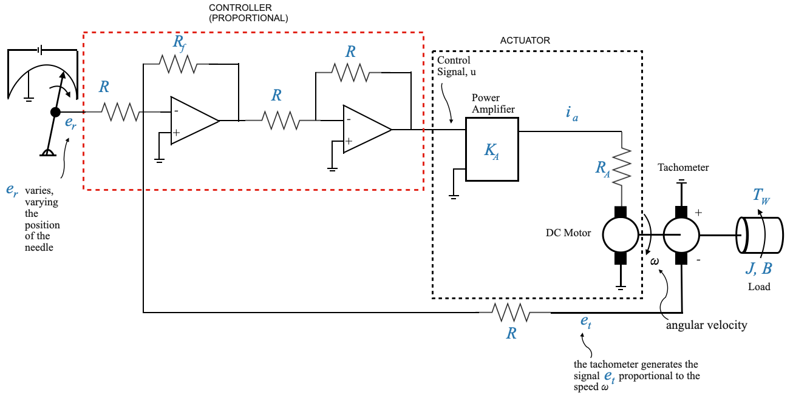 |
Componenti e loro ruoli:
Attuatore (motore e amplificatore di potenza):
- L’attuatore fornisce la coppia necessaria per trascinare il carico alla velocità desiderata, \(\omega\).
- Comprende un motore abbinato ad un amplificatore di potenza.
- L’attuatore riceve un segnale di controllo, \(u\), da un controller.
Controller (amplificatore):
- In questa configurazione di base, il controller è un semplice amplificatore. Tuttavia, in configurazioni più avanzate, potrebbe trattarsi di un sistema complesso che coinvolge la derivata o l’integrale di un segnale di errore.
- Il ruolo principale del controller è elaborare il segnale di errore e produrre un segnale di controllo appropriato, \(u\).
- Vedremo più avanti come progettare i controller
Elementi di ingresso di riferimento (potenziometro):
- Questo componente fornisce il segnale di riferimento, \(e_r\), che corrisponde alla velocità comandata richiesta, \(\omega_r\) (non mostrata nello schema). Vorremmo \(\omega \rightarrow \omega_r\)
- Regolando la posizione del braccio del potenziometro, è possibile modificare il segnale di riferimento, comandando quindi una velocità diversa.
Elemento di feedback (tacogeneratore):
- La dinamo tachimetrica rileva la velocità effettiva, \(\omega_r\), e produce un segnale di feedback, \(e_t\), proporzionale a questa velocità.
- Questo segnale di feedback è essenziale per confrontare la velocità effettiva con la velocità desiderata e generare un segnale di errore.
- La differenza tra \(e_r\) (proporzionale alla variabile controllata) e \(e_t\) (proporzionale alla variabile comandata) fornisce il segnale di errore di attuazione \(\hat{e}\).
- Il segnale di errore di attuazione \(\hat{e}\) viene amplificato attraverso il controller per generare il segnale di controllo \(u\) e fornito all’attuatore che gestisce il carico.
Tieni presente che l’obiettivo principale della progettazione del controller è regolarlo in modo appropriato per soddisfare obiettivi specifici. Mentre altri componenti, come il motore, rimangono costanti e non possono essere modificati facilmente, è più pratico ed efficiente modificare le impostazioni del controller.
Rappresentazione del diagramma a blocchi:
Il sistema fisico può essere astratto in uno schema a blocchi per visualizzare la struttura del feedback e gli elementi fondamentali in modo più strutturato.
| 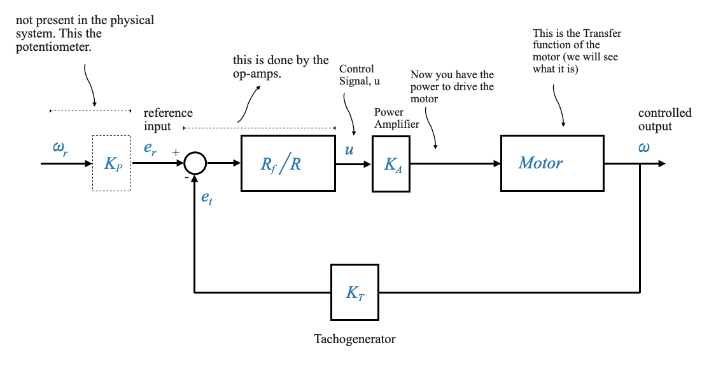 |
L’elemento di feedback, come la dinamo tachimetrica (con costante \(K_T\)), fornisce informazioni in tempo reale sullo stato attuale del sistema (in questo caso, la velocità effettiva). Questo feedback consente al controller di confrontare la velocità effettiva con la velocità desiderata e di apportare le modifiche necessarie per ridurre eventuali discrepanze.
Confrontare la struttura di controllo con i cicli di controllo in feedback di cui abbiamo parlato prima (da \(e_r\) a \(\omega\)). Questa è una struttura di feedback non unitaria.
La funzione di trasferimento del sensore (la dinamo tachimetrica) è \(K_T\).
Questa configurazione può essere convertita in un formato di feedback unitario per facilitare l’analisi e la progettazione, il tutto preservando i dettagli vitali del sistema. Affinché questa conversione sia efficace, il blocco che collega $ _r $ e $ e_r $ dovrebbe possedere una funzione di trasferimento equivalente a $ K_T $. In altre parole, la costante del potenziometro, \(K_P\), dovrebbe essere impostata uguale alla costante della dinamo tachimetrica, \(K_T\).
Il segnale di errore di attuazione è \(\hat{e} = e_r - e_t\). Questo è un segnale di tensione. L’unità è Volt, non radianti al secondo. Questi Volt saranno proporzionali all’errore di velocità se e solo se \(K_P=K_T\). Questo è il lavoro dell’ingegnere di controllo! È possibile impostare la costante del potenziometro.
L’elemento di ingresso di riferimento potrebbe non essere fisicamente presente nel sistema (come la dinamo tachimetrica) ma ho comunque il blocco nello schema perché e’ necessario per spiegare il funzionamento del sistema!
Ora possiamo riscrivere il diagramma a blocchi come feedback unitario equivalente
| 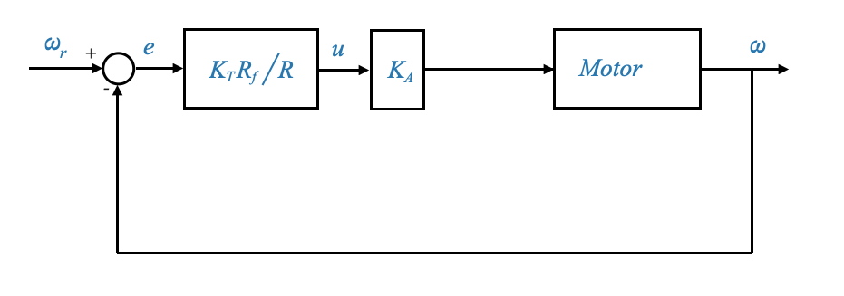 |
Questo diagramma ha le stesse equazioni del precedente. Questa è una rappresentazione del diagramma a blocchi equivalente che mantiene la stessa relazione matematica del diagramma a blocchi originale tra \(\omega\) e \(\omega_r\).
Per questo diagramma a blocchi, \(e\) rappresenta l’errore di sistema: la differenza tra la velocità comandata e quella effettiva.
Un sistema di feedback unitario risulta essere più conveniente per l’analisi e la progettazione.
Analisi del Blocco Motore
Approfondiamo la dinamica del motore e la sua rappresentazione negli schemi a blocchi.
Il motore controllato dall’armatura è un tipo specifico di motore in cui la velocità viene controllata variando la tensione ai capi dell’armatura. Uno schema è riportato nell’immagine qui sotto:
| 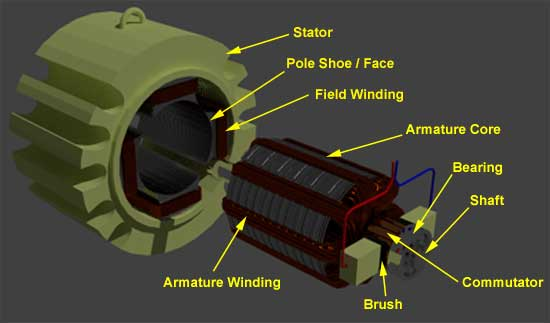 |
Figura da electric4u.com
| 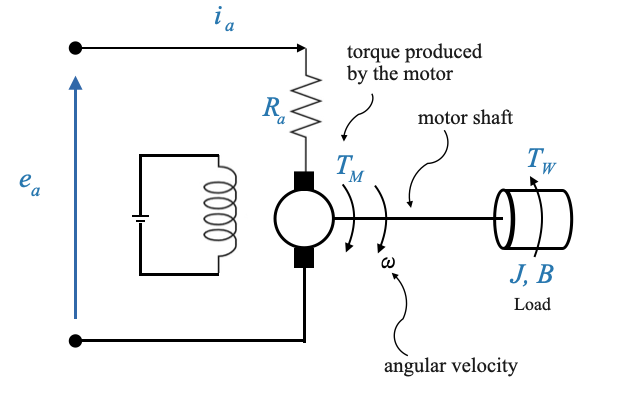 |
Componenti del motore
Indotto: L’armatura è il componente rotante principale del motore. Trasporta la corrente (spesso definita corrente di armatura, \(i_a\), che interagisce con il campo magnetico prodotto dagli avvolgimenti di campo. Questa interazione tra la corrente e il campo magnetico si traduce in una coppia che fa ruotare l’armatura. La tensione attraverso l’armatura (\(e_a\)) e la corrente che la attraversa (\(i_a\)) determinano la velocità e la coppia del motore.
Avvolgimenti di campo: si tratta di bobine avvolte attorno allo statore del motore, che producono un campo magnetico quando energizzate. Quando la corrente passa attraverso gli avvolgimenti di campo, produce un campo magnetico. In un motore controllato da armatura, la corrente di campo (\(i_f\)) viene generalmente mantenuta costante, garantendo un campo magnetico costante.
- L’intensità del campo magnetico generato dagli avvolgimenti di campo influisce sulla coppia e sulla velocità del motore.
- Variando la corrente di campo è possibile controllare le caratteristiche del motore, soprattutto nei motori controllati dal campo.
- Back EMF (\(e_b\)), (Forza elettromotrice): quando l’armatura ruota, induce una tensione che si oppone alla tensione di armatura applicata. Questa tensione indotta è chiamata back EMF (\(e_b\)).
Agisce come un meccanismo di feedback naturale: all’aumentare della velocità del motore, aumenta la forza controelettromotrice, che a sua volta riduce la tensione netta attraverso l’armatura e quindi limita la velocità.
È direttamente proporzionale alla velocità del motore.
La forza elettromotrice posteriore svolge un ruolo cruciale nella stabilizzazione della velocità del motore. Comprenderne la dinamica è essenziale per progettare controllori in grado di regolare in modo efficiente la velocità del motore, soprattutto nei motori controllati da armatura.
Il motore del nostro sistema di controllo è caratterizzato da:
- tensione di armatura applicata, \(e_a\)
- la sua resistenza di armatura, \(R_a\)
- e l’attuale \(i_a\).
Quando funziona, produce una coppia \(T_M\). Questa coppia agisce sull’albero motore insieme ad una coppia di disturbo \(T_W\).
Modello di motore controllato da armatura
Rivediamo leggermente il diagramma precedente per esplicitare la presenza del Back EMF.
| 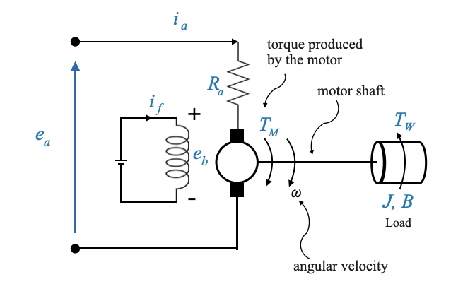 |
Possiamo anche notare che in un modello semplificato l’induttanza dell’armatura può essere trascurata. In molti scenari, soprattutto in condizioni stazionarie, gli effetti della resistenza dell’armatura e dei campi elettromagnetici posteriori prevalgono sugli effetti transitori dell’induttanza dell’armatura. Inoltre, l’induttanza dell’armatura (\(L_a\)) e la resistenza (\(R_a\)), insieme definiscono una costante di tempo elettrica per il motore, data da \(\tau_e=\frac{L_a}{R_a}\). Per molti motori, soprattutto quelli più piccoli, questa costante di tempo elettrica è molto inferiore alla costante di tempo meccanica (definita da parametri come l’inerzia e l’attrito del motore). Se la risposta del sistema o la strategia di controllo non opera su una scala temporale in cui questa costante di tempo elettrica è significativa, può essere trascurata.
In questo caso possiamo stabilire le seguenti relazioni chiave:
- La corrente di armatura è influenzata dalla differenza tra la tensione applicata e la forza controelettromotrice, divisa per la resistenza di armatura:
\[ \begin{align} i_a = \frac{e_a-e_b}{R_a} \end{align} \]
- La corrente di campo \(i_f\) è costante e \(i_a\) dipende dalla tensione applicata \(e_a\). Tuttavia la coppia prodotta dal motore (\(T_M\)) è proporzionale al prodotto dei due flussi, e quindi delle due correnti. Poiché \(i_f\) è mantenuto costante, possiamo dire che la coppia prodotta dal motore è proporzionale alla corrente di armatura:
\[ \begin{align} T_M = K_T \times i_a \end{align} \]
Dove \(K_T\) è la costante di coppia del motore.
Il motore è detto controllato dall’armatura perché stiamo controllando la corrente di armatura \(i_a\) attraverso la tensione applicata \(e_a\), e questo rende possibile controllare la velocità del motore.
- La forza controelettromotrice è proporzionale alla velocità del motore:
\[ \begin{align} e_b = K_b \times \omega \end{align} \]
Dove \(K_b\) è la costante EMF posteriore.
- Fattore di forze e coppie esterne
La coppia \(T_m\) guida il carico e possiamo scrivere un’equazione di equilibrio delle forze, tenendo conto delle influenze esterne come la coppia di disturbo \(T_W\), la coppia inerziale dovuta all’inerzia del motore \(J\) e la coppia di attrito dovuta all’attrito viscoso $ B$:
\[ \begin{align} T_M = J\dot{\omega} + B\omega + T_W \end{align} \]
Rappresentazione in un diagramma a blocchi
Avendo compreso le relazioni e le equazioni che governano la dinamica del motore, possiamo rappresentarle in uno schema a blocchi.
Il segnale in ingresso è \(e_a\), che possiamo trasformare in \(E_a(s)\).
| 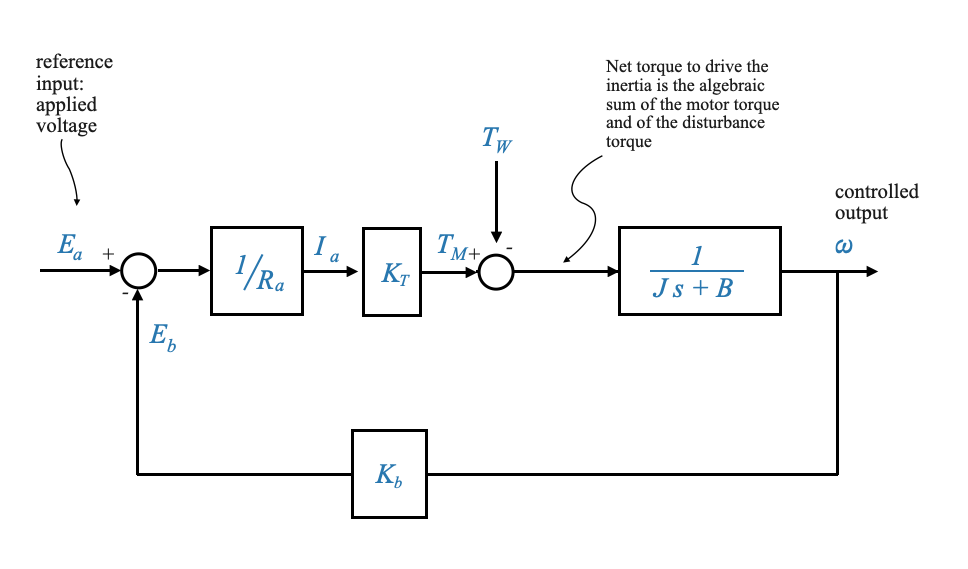 |
Il circuito di retroazione è inerente al funzionamento del motore ed è una caratteristica importante dei motori controllati dall’armatura. Fornisce smorzamento.
La forza controelettromotrice si oppone alla tensione di armatura applicata, influenzando la corrente di armatura e, di conseguenza, la velocità e la coppia del motore. Introduce inoltre un anello di feedback intrinseco nei motori controllati da armatura, che influenza la risposta dinamica del motore.
Derivare la funzione di trasferimento
Combinando le relazioni e le equazioni di cui sopra, si ricava la funzione di trasferimento per il motore, mettendo in relazione la velocità di uscita \(\omega\) con la tensione di armatura di ingresso \(e_a\). Se impostiamo \(T_W=0\), otteniamo:
\[ \begin{align} \frac{\omega(s)}{E_a(s)} = \frac{\frac{K_T/R_a}{Js+B}}{\frac{1+K_bK_T/R_a}{Js+B}} = \ frac{K_T/R_a}{Js + B + K_bK_T/R_a} \end{align} \]
Questa funzione di trasferimento è fondamentale in quanto ci fornisce un modello matematico della dinamica del motore, che può essere utilizzato per scopi di analisi e progettazione.
Possiamo trasferire questa funzione di trasferimento in una forma standard del primo ordine:
\[ \begin{align} \frac{\omega(s)}{E_a(s)} = \frac{K_m}{\tau_m s + 1} \end{align} \]
Dove:
\[ \tau_m = \frac{J}{B+K_bK_T/R_a} \]
\[ K_m = \frac{K_T/R_a}{B+K_bK_T/R_a} \]
Commenti sul feedback intrinseco del motore
Una delle caratteristiche uniche del motore controllato dall’indotto è il circuito di retroazione intrinseco dovuto a \(K_b\).
La forza controelettromotrice \(e_b\) è una tensione generata negli avvolgimenti dell’indotto di un motore quando gira. Si oppone alla tensione applicata \(e_a\) e la sua grandezza è proporzionale alla velocità del motore. La costante di proporzionalità è spesso indicata come \(K_b\).
\(K_b\) aumenta il valore di \(B\) e quindi aumenta lo smorzamento effettivo del motore. Quando il motore accelera, la forza elettromotrice posteriore aumenta. Questa maggiore forza elettromotrice si oppone più fortemente alla tensione applicata, riducendo efficacemente la tensione netta attraverso l’armatura. Ciò, a sua volta, riduce la corrente di armatura, che a sua volta diminuisce la coppia prodotta dal motore. Questo comportamento agisce come un meccanismo di smorzamento naturale, rallentando il motore quando tenta di funzionare troppo velocemente.
Questo feedback intrinseco fornisce lo smorzamento richiesto, garantendo un rapido smorzamento delle oscillazioni e una risposta più rapida allo stato stazionario.
Questo non è disponibile in tutti i motori (ad esempio, i motori controllati dal campo).
Si noti inoltre che la costante di tempo del motore diminuisce quando \(K_b\) aumenta, portando a una risposta più rapida (ovvero, raggiunge il suo valore di stato più rapidamente).
Barra laterale: in che modo la forza elettromotrice posteriore influisce sullo smorzamento
Ricorda le equazioni del motore:
\[ \begin{align} i_a = \frac{e_a-e_b}{R_a} \end{align} \]
\[ \begin{align} T_M = K_T \times i_a \end{align} \]
\[ \begin{align} e_b = K_b \times \omega \end{align} \]
\[ \begin{align} T_M = J\dot{\omega} + B\omega + T_W \end{align} \]
Sostituendo nell’equazione (2), l’espressione per \(i_a\) da (1) e poi l’espressione per \(e_b\) da (3):
\[ \begin{align} T_M = K_T \times \frac{e_a-e_b}{R_a} = K_T \times \frac{e_a-(K_b\omega)}{R_a} \end{align} \]
La coppia prodotta dal motore deve bilanciare le coppie resistenti al movimento del motore, che ora possiamo scrivere come:
\[ K_T \times \frac{e_a-(K_b\omega)}{R_a} = T_M = J\dot{\omega} + B\omega + T_W \]
La forza elettromotrice posteriore non entra direttamente nell’equazione della coppia, ma influenza la corrente di armatura, che a sua volta influisce sulla coppia prodotta dal motore. L’influenza della forza controelettromotrice sulla coppia è indiretta, attraverso la sua influenza sulla corrente di armatura.
– FINE DELLA BARRA LATERALE
Domanda pop-up: Se la costante \(K_b\) dovesse aumentare (il che significa che il motore genera più forza elettromotrice posteriore per una determinata velocità), il motore sarebbe più o meno smorzato?
Risposta: Il motore sarebbe più smorzato. Un aumento di \(K_b\) significa che per ogni data velocità, la forza elettromotrice posteriore sarebbe maggiore, opponendosi più fortemente alla tensione applicata e aumentando così l’effetto di smorzamento nel sistema.
Rivisitare il sistema originale
Torniamo al sistema primario dove integriamo il motore e deriviamo la funzione di trasferimento complessiva.
| 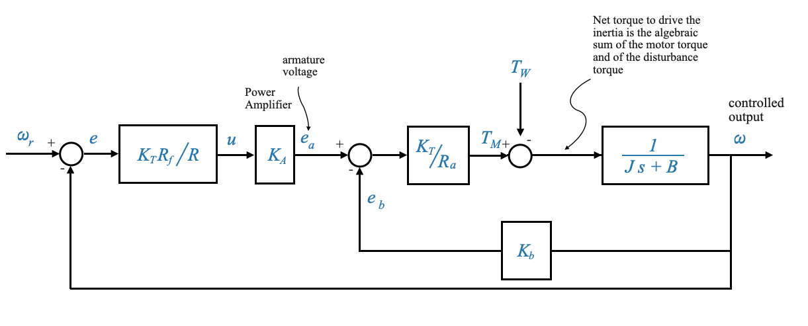 |
Utilizzando metodi di riduzione del diagramma a blocchi (ad esempio, grafici del flusso del segnale o direttamente) diventa facile ottenere la funzione di trasferimento complessiva tra qualsiasi segnale di interesse.
Generalmente:
\[ \omega(s) = M(s)\omega_r(s) + M_W(s)T_W(s) \]
Domanda (Popup): Perché usiamo \(\omega_r\) invece di \(e_r\) nella nostra rappresentazione del diagramma a blocchi? Risposta: \(\omega_r\) viene utilizzato perché, ai fini dell’analisi e della progettazione nello schema a blocchi, fornisce una rappresentazione equivalente. Si tratta di equivalenza matematica piuttosto che di connessione fisica.
Sistema di controllo della posizione
Mentre il sistema di controllo della velocità si concentra sul mantenimento di una velocità specifica, il sistema di controllo della posizione mira a garantire che il carico o l’albero motore raggiunga e mantenga la posizione desiderata. Questo sistema è fondamentale nelle applicazioni in cui la precisione nel posizionamento è fondamentale.
L’obiettivo principale del sistema di controllo della posizione è controllare la posizione del carico. È fondamentalmente diverso dal sistema di controllo della velocità di cui abbiamo discusso in precedenza.
| 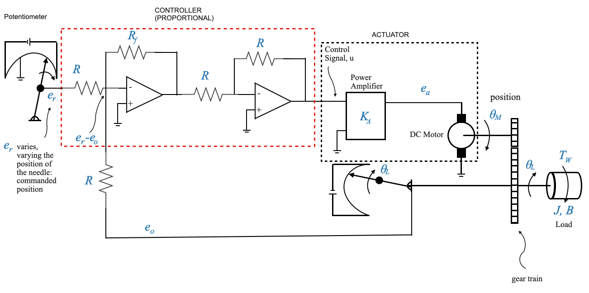 |
Nel sistema di controllo della posizione:
- L’ingresso di riferimento \(e_r\) viene nuovamente fornito in termini di tensione.
- Tuttavia questa tensione \(e_r\) rappresenta ora la posizione desiderata.
- L’obiettivo è che la posizione effettiva del carico \(\theta_L\) segua la posizione comandata \(\theta_r\).
Comprendere lo schema a blocchi
L’ingresso di riferimento \(e_r\) rappresenta la posizione desiderata, impostabile su un potenziometro. Pertanto, \(e_r = K_p \times \theta_r\), dove \(K_p\) è la costante potenziometrica.
Il segnale di feedback in questa fase è la posizione del carico \(\theta_L\). Questa posizione viene anche convertita in un segnale di tensione, rappresentato come \(e_0 = K_p*\theta_L\).
Per semplicità e per facilitare una rappresentazione del diagramma a blocchi con retroazione unitaria, assumiamo che le costanti potenziometriche per le posizioni comandate e effettive siano identiche. Se le due costanti non fossero uguali non otterremmo un diagramma a blocchi con feedback unitario.
Il rilevatore di errori rileva la differenza tra la posizione desiderata e quella effettiva. Fornisce una tensione proporzionale a questa differenza, \(e_r - e_o\). Nota che l’ingresso dell’amplificatore operazionale è \(e_r - e_o\) perché il segno dei due potenziometri è invertito.
Il secondo amplificatore operazionale è un amplificatore invertente per invertire il segno del segnale.
L’uscita dell’amplificatore, \(u\), funge da ingresso per l’amplificatore di potenza, risultando nella tensione \(e_a\). Questa tensione aziona il motore controllato dall’indotto.
La coppia generata dal motore, tenendo conto dei disturbi esterni, trascina il carico.
Osservare che sia presente un rotismo che faccia da intermediario tra l’albero motore ed il carico. Ciò è spesso essenziale quando è necessario amplificare la coppia per spostare il carico, il che si traduce contemporaneamente in una riduzione della velocità.
Il treno di ingranaggi è essenziale per fornire la necessaria amplificazione di coppia, soprattutto quando si ha a che fare con un carico più pesante.
Infine, la posizione del carico \(\theta_L\) viene rilevata dal potenziometro e restituita.
Il treno di ingranaggi nel sistema motore
Il treno di ingranaggi svolge un ruolo cruciale nell’amplificare la coppia e diminuire la velocità, adattato alle esigenze del carico.
Il nostro focus sarà sulla modellazione di due ingranaggi. Se il sistema prevede più di due marce è necessario formulare un modello corrispondente.
| 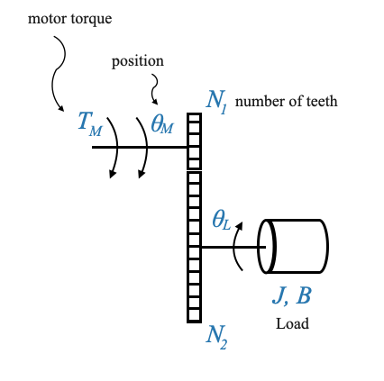 |
\(\theta_M\) indica la posizione del motore, mentre \(\theta_L\) indica la posizione del carico. Le loro direzioni sono invertite a causa della meccanica del treno di ingranaggi.
\(T_W\) è la coppia di disturbo che, come illustrato, contrasta la direzione del movimento del carico. Tuttavia, è importante ricordare che si tratta di un valore algebrico.
Derivare la relazione tra coppia e velocità
Cominciamo derivando un’equazione che mette in relazione la coppia e le velocità di due ingranaggi collegati.
| 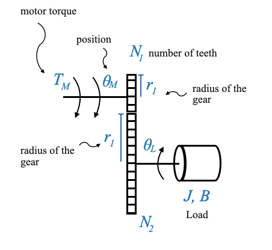 |
Consideriamo due ingranaggi, Gear 1 e Gear 2. I raggi di questi ingranaggi sono rispettivamente \(r_1\) e \(r_2\). Man mano che gli ingranaggi ruotano, il numero di giri dei due ingranaggi è diverso: la distanza lineare percorsa dalle loro superfici rimane costante, portando alla relazione:
\[ \theta_Mr_1 = \theta_Lr_1 \]
Domanda pop-up: Perché le distanze lineari percorse dai due ingranaggi devono essere le stesse?
Risposta: Gli ingranaggi sono in contatto, quindi per ogni giro di un ingranaggio, anche la parte corrispondente dell’altro ingranaggio percorre la stessa distanza lineare.
Supponendo che i raggi e il numero di denti siano proporzionali, possiamo scrivere:
\[ \begin{align} \frac{N_1}{N_2} = \frac{\theta_L}{\theta_M} \end{align} \]
Questa diventa la nostra prima equazione fondamentale. Ma c’è di più in questa storia. Se differenziamo l’equazione precedente rispetto al tempo, otteniamo la relazione tra le velocità angolari dei due ingranaggi:
\[ \begin{align} \frac{N_1}{N_2} = \frac{\dot{\theta}_L}{\dot{\theta}_M} \end{align} \]
Il rapporto \(\frac{N_1}{N_2}\) è spesso definito rapporto di trasmissione, indicato con \(n\).
Esame della dinamica della coppia
Ora spostiamo la nostra attenzione sulle coppie coinvolte.
| 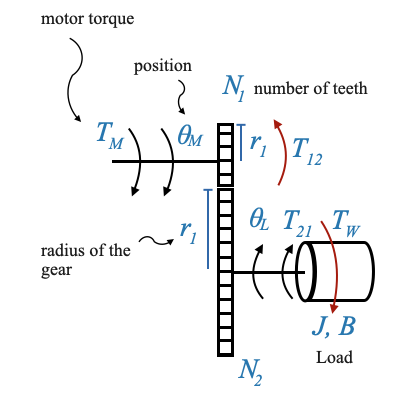 |
La coppia generata dal motore è rappresentata da \(T_M\).
La coppia trasmessa attraverso il treno di ingranaggi all’albero di carico è \(T_{21}\). Questa coppia è fondamentale in quanto si oppone alla coppia di disturbo \(T_W\).
Un’altra coppia da considerare è \(T_{12}\), che indica il carico dovuto al Gear 2 (e al carico collegato) sull’albero del motore. Possiamo capirlo intuitivamente perché il carico sull’albero motore quando abbiamo il Gear 2 e quando non lo abbiamo è diverso.
Nel punto di contatto tra gli ingranaggi, le forze sviluppate dai due ingranaggi dovrebbero equivalersi. Perciò:
\[ \frac{T_{12}}{r_1} = \frac{T_{21}}{r_2} \]
\[ \frac{T_{12}}{T_{21}} = \frac{N_{1}}{N_2} = \frac{\dot{\theta}_L}{\dot{\theta}_M} \]
Se \(n < 1\), il rapporto di trasmissione amplifica la coppia (e riduce la velocità). Il valore tipico è n=1/30.
Integrazione degli effetti dell’equipaggiamento nel sistema
Uno dei risultati interessanti della nostra discussione finora è che possiamo rappresentare gli effetti combinati del motore e del treno di ingranaggi come se fossero un’unica entità. Matematicamente, l’intero sistema si comporta come se ci fosse un motore che aziona direttamente un carico con un momento di inerzia e attrito “equivalente”. Vediamo come risolverlo.
| 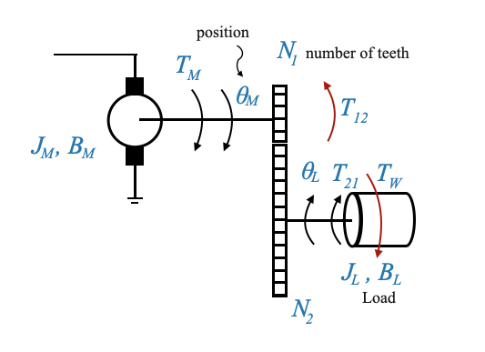 |
Per la seconda marcia, l’equazione all’albero di carico è:
\[ T_{21} = J_L\ddot{\theta_L} + B_L\dot{\theta_L} + T_W \]
Per la prima marcia, l’equazione all’albero motore è:
\[ T_M = J_M\ddot{\theta_M} + B_M\dot{\theta_M} + T_{12} \]
dove \(T_{12}\) rappresenta l’opposizione del carico e della seconda marcia all’albero motore.
Poiché \(\frac{T_{12}}{T_{21}} = \frac{N_{1}}{N_2}\), gli effetti combinati possono essere espressi come:
\[ T_M = J_M\ddot{\theta_M} + B_M\dot{\theta_M} + \frac{N_{1}}{N_2}\Big[J_L\ddot{\theta_L} + B_L\dot{\theta_L} + T_W\ Big] \]
Poiché \(n = \frac{N_1}{N_2} = \frac{\theta_L}{\theta_M}\) possiamo riscrivere l’equazione in funzione di \(\theta_M\):
\[ T_M = J_M\ddot{\theta_M} + B_M\dot{\theta_M} + \Big(\frac{N_{1}}{N_2}\Big)^2J_L\ddot{\theta_M} + \Big(\frac{ N_{1}}{N_2}\Big)^2B_L\dot{\theta_M} + \frac{N_{1}}{N_2}T_W \]
Possiamo finalmente raggruppare le cose insieme:
\[ T_M = \Big(J_M+n^2J_L\Big)\ddot{\theta_M} + \Big(B_M+n^2B_L\Big)\dot{\theta_M}+ nT_W \]
Matematicamente il sistema di controllo della posizione è equivalente al seguente:
Dove: - \(J_{eq} = \Big(J_M+n^2J_L\Big)\) - \(B_{eq} = \Big(B_M+n^2B_L\Big)\) - \(nT_W\), è il disturbo equivalente che agisce sull’albero motore (in realtà il disturbo agisce sul carico).
Con la nuova rappresentazione abbiamo riportato il problema del controllo allo stesso che avevamo con il controllo della velocità.
Diagramma a blocchi
| 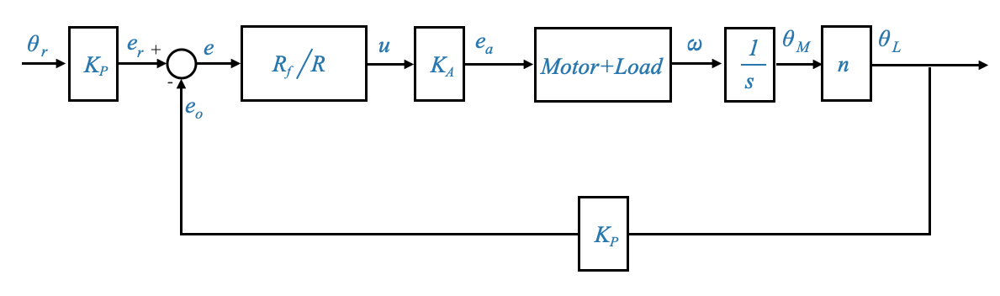 |
- La dinamica del motore (compresi gli effetti del treno di ingranaggi) è rappresentata dall’equazione precedentemente derivata.
- Vengono introdotti circuiti di feedback per tenere conto della forza elettromotrice posteriore e del meccanismo di controllo della posizione.
Alcuni commenti aggiuntivi sul sistema di controllo della posizione CC
Nelle nostre discussioni precedenti, abbiamo approfondito le complessità del sistema di controllo della posizione CC. Oggi rivisiteremo ulteriormente questo sistema, esplorandone il significato nei sistemi di controllo e comprendendone i componenti fondamentali.
I motori CC azionano molti carichi, rendendo il sistema di controllo della posizione CC un elemento fondamentale nel controllo automatico. Questo sistema ha diversi componenti e abbiamo visto l’equivalenza quando riportiamo il carico e il treno di ingranaggi sull’albero motore:
| 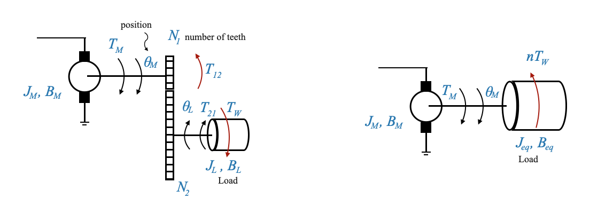 |
_Figura: a sinistra: motore, treno di ingranaggi e carico. A destra: rappresentazione equivalente.
Dalle nostre discussioni precedenti, abbiamo dedotto che i parametri di carico potrebbero essere rispecchiati sull’albero motore. Questa realizzazione ci permette di rappresentare matematicamente il sistema in maniera semplificata, senza coinvolgere esplicitamente il treno di ingranaggi. Per chiarezza, si consideri un sistema in cui un motore aziona un carico attraverso un treno di ingranaggi. Questo sistema può essere rappresentato in modo equivalente come un motore che aziona un carico diretto, a patto di regolare opportunamente i parametri del carico per tenere conto degli effetti del treno di ingranaggi.
- Momento di inerzia equivalente sull’albero motore \[J_{eq} = \Big(J_M+n^2J_L\Big)\]
- Coefficiente di attrito viscoso equivalente \[B_{eq} = \Big(B_M+n^2B_L\Big)\]
Qui \(J_M\) e \(B_M\) rappresentano rispettivamente l’inerzia dovuta al rotore, agli ingranaggi, ecc. e il coefficiente di attrito sull’albero motore. \(n\) è il rapporto di trasmissione definito come il rapporto tra il numero di denti sui due ingranaggi, \(N_1\) e \(N_2\).
- L’equazione del motore:
\[ T_M = J_{eq}\ddot{\theta_M} + B_{eq}\dot{\theta_M}+ nT_W \]
Si noti che \(T_W\) è il disturbo sull’albero del carico e \(n\) riflette questo disturbo sull’albero del motore.
Per modellare il nostro sistema, iniziamo considerando il motore controllato dall’armatura. La variabile di controllo qui è la tensione di armatura \(e_a\), mentre la FEM opposta è \(e_b\). Stiamo trascurando l’induttanza dell’armatura come discusso in precedenza.
In questo caso, per il motore caricato tramite un treno di ingranaggi, il carico direttamente collegato ad esso ha i parametri \(J\) e \(B\) riflessi dal carico originale tramite il treno di ingranaggi. Se il carico è collegato tramite un treno di ingranaggi, \(J\) e \(B\) lo includeranno direttamente. Il disturbo in questo contesto è \(nT_W\).

|
Modello di diagramma a blocchi
Dall’immagine precedente possiamo generare il seguente diagramma a blocchi, partendo dall’ingresso \(e_a\) fino all’uscita \(\theta_M\).
| 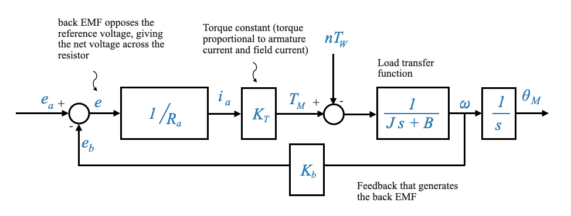 |
Figura: diagramma a blocchi che mostra l’intero sistema, dal rilevatore di errori che confronta la tensione di armatura e la forza elettromagnetica di ritorno, al treno di ingranaggi e ai parametri di carico e infine all’uscita
In base a questo diagramma, applicando il principio di sovrapposizione (e quindi ponendo \(T_W=0\), la funzione di trasferimento che lega la velocità di uscita \(\omega\) all’ingresso \(e_a\) è:
\[ \frac{\omega(s)}{E_a(s)} = \frac{\frac{K_T/R_a}{Js+B}}{\Big(1+\frac{K_bK_T/R_a}{Js+B} \Big)} = \frac{K_T/R_a}{Js+B+K_bK_T/R_a} \]
Nota dall’equazione sopra come la costante EMF posteriore \(K_b\) si aggiunge all’attrito meccanico nel sistema (il termine \(B\)), fornendo così ulteriore smorzamento, stabilizzando il sistema e rendendolo meno suscettibile alle oscillazioni. (quasi fornendo “attrito elettrico”)
La nostra funzione di trasferimento precedentemente derivata può essere interpretata nella sua forma standard per i sistemi del primo ordine come:
\[ \frac{\omega(s)}{E_a(s)} = \frac{K_m}{\tau_m s + 1} \]
Dove:
- \(K_m\) è il guadagno del sistema.
- \(\tau_m\) è la costante di tempo meccanica, che può essere calcolata come:
\[ \tau_m = \frac{J}{B+\frac{K_TK_b}{R_a}} \]
Se siamo più interessati alla relazione tra la posizione \(\theta_M\) e la tensione di ingresso \(e_a\), la funzione di trasferimento diventa:
\[ \frac{\theta_M(s)}{E_a(s)} = \frac{K_m}{s\Big(\tau_m s + 1\Big)} \]
Barra laterale - Approfondimento sulla correlazione tra \(K_T\) e \(K_b\)
L’interrelazione tra la costante di coppia \(K_T\) e la costante della forza controelettromotrice \(K_b\) è un aspetto fondamentale della dinamica dei motori CC. Queste costanti sono proprietà intrinseche del motore, che ne governano il comportamento elettrico e meccanico. Per apprezzare veramente il loro significato e la loro relazione, è essenziale comprenderli in dettaglio.
Cosa sono \(K_T\) e \(K_b\)?
Costante di coppia \(K_T\): indica la coppia prodotta per unità di corrente. In termini semplici, fornisce una misura dell’efficacia del motore nel convertire la corrente elettrica in coppia meccanica. Un \(K_T\) più alto implica che il motore può generare più coppia per la stessa corrente. La sua unità è Newton metro per ampere (Nm/A).
Costante EMF posteriore \(K_b\): La costante EMF posteriore determina la tensione prodotta per unità di velocità. Quando un motore ruota, genera intrinsecamente un EMF che si oppone alla tensione di pilotaggio; questo è chiamato EMF posteriore. \(K_b\) quantifica questo effetto, indicando essenzialmente quanta tensione genera il motore per ogni radiante/secondo di rotazione. La sua unità è volt per radiante al secondo (V/(rad/s)).
Derivazione matematica della loro relazione:
Considerando la potenza sviluppata nel motore a causa della forza controelettromotrice:
\[ \begin{align} P &= e_b \times i_a\;\;\;\; \text{watt} \\ &= K_bw \times i_a\;\;\;\; \frac{\text{volt}}{\text{rad/s}}\text{rad/s} \times \text{amp} \end{align} \]
Dal punto di vista meccanico la potenza è data anche da:
\[ \begin{align} P &= T_M \times \omega\;\;\;\; \text{watt} \\ &= (\text{Newton-m})(\text{rad-s}) \end{align} \]
Che può essere espanso come: \[ \begin{align} P &= K_Ti_a \times \omega\;\;\;\; \text{watt} \\ &= \frac{\text{Newton-m}}{\text{amp}} \text{amp} \times \text{rad/s} \end{align} \]
Dato che entrambe le espressioni rappresentano la potenza sviluppata nel motore, le equiparamo:
\[ K_b \omega \times i_a = K_T i_a \times \omega \]
Semplificando troviamo: \[ \begin{align} K_b &= K_T \\ \frac{\text{Newton-m}}{\text{amp}} &= \frac{\text{volt}}{\text{rad/s}} \end{align} \]
Pertanto, questa derivazione evidenzia che la costante di coppia $ K_T $ e la costante EMF posteriore $ K_b $ sono numericamente uguali quando $ K_T $ è misurato in Newton metro per ampere e $ K_b $ in volt per radiante al secondo. I loro valori numerici sono gli stessi. Questo è il caso quando li consideriamo utilizzando queste unità specifiche. Se utilizziamo unità diverse, queste possono essere correlate da una costante e quindi i loro valori numerici potrebbero essere diversi.
Implicazioni pratiche
Questa equivalenza non è solo una curiosità matematica; ha implicazioni nel mondo reale. Ad esempio, quando si progettano controllori motore o quando si acquistano motori per applicazioni specifiche, sapere che \(K_T\) e \(K_b\) sono uguali (in unità coerenti) può semplificare i calcoli e fornire informazioni dettagliate sul comportamento del motore.
Da un punto di vista sperimentale, misurare \(K_b\) è più semplice e potenzialmente più accurato che misurare \(K_T\). Ad esempio, per determinare \(K_b\) è necessario soltanto misurare la forza elettromotrice e la velocità, mentre per valutare \(K_T\) sono necessarie misurazioni della coppia. Data la suddetta relazione tra \(K_T\) e \(K_b\), è possibile misurare sperimentalmente \(K_b\) e ricavarne \(K_T\), offrendo un approccio più diretto.
La facilità di misurazione di \(K_b\) rispetto a \(K_T\) significa che gli ingegneri spesso determinano sperimentalmente \(K_b\) (si misurano la FEM e la velocità) e quindi deducono \(K_T\) (è necessario misurare una coppia). Ciò può portare a risparmi sui costi e caratterizzazioni dei motori più accurate in scenari pratici.
– FINE DELLA BARRA LATERALE
Motori controllati dal campo
Dopo aver compreso i motori controllati dall’armatura, è giunto il momento di introdurre il concetto di motori controllati dal campo.
In questi motori la corrente di armatura \(i_a\) rimane costante, mentre la corrente di campo \(i_f\) viene variata per controllare la coppia \(T_M\).
| 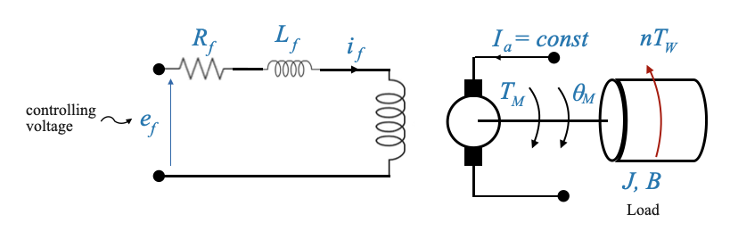 |
- Ora la resistenza di campo e l’induttanza non sono trascurabili.
- L’effetto ‘resistenza elettrica’ non è più presente.
La funzione di trasferimento risultante da \(\omega(s)\) e \(E_f(s)\) è:
\[ \frac{\omega(s)}{E_f(s)} = \frac{K^{'}_m}{(\tau_f s + 1)(\tau^{'}_m s + 1)} \]
che è un modello del secondo ordine.
La funzione di trasferimento dalla posizione \(\theta_M(s)\) e \(E_f(s)\) abbiamo un modello del terzo ordine:
\[ \frac{\theta_M(s)}{E_f(s)} = \frac{K^{'}_m}{s(\tau_f s + 1)(\tau^{'}_m s + 1)} \]
Più alto è l’ordine del modello, più complessa sarà la progettazione. L’ulteriore complessità deriva dal fatto che \(L_f\) non può essere trascurato.
Selezione del motore: fattori da considerare
Esaminiamo più in profondità come viene effettuata la scelta tra i diversi tipi di motori, in particolare i motori controllati sul campo rispetto ai motori controllati dall’armatura, in base alle applicazioni specifiche. Ricorda, ogni decisione ingegneristica comporta dei compromessi. Nel nostro contesto, queste decisioni ruotano attorno a potenza, prestazioni, costi e requisiti applicativi specifici.
- Circuito campo/armatura:
Requisiti dell’amplificatore di potenza: un vantaggio significativo del circuito di campo sono i requisiti inferiori dell’amplificatore di potenza. La potenza totale necessaria per azionare il circuito di campo è considerevolmente inferiore a quella richiesta per il circuito di armatura. Ciò significa che sarebbe sufficiente un amplificatore di potenza meno costoso.
Implicazioni sui costi: una conseguenza diretta dei ridotti requisiti dell’amplificatore di potenza è il costo. L’amplificatore di potenza per un circuito di campo è generalmente più economico rispetto a quello per un circuito di armatura.
- Sfide con la corrente di armatura:
Mantenere una corrente di armatura costante, soprattutto quando è elevata, rappresenta una sfida.
- Come mantenere costante la corrente dell’armatura?
- La corrente di armatura può essere mantenuta abbastanza costante utilizzando una sorgente di tensione elevata e costante.
- Se la resistenza del circuito \(R\) è considerevolmente maggiore della resistenza del circuito di armatura e la sorgente di tensione è robusta, la corrente di armatura \(i_a\) rimarrà relativamente costante.
- Quali sono le cause dei cambiamenti in \(i_a\)?
- Il principale colpevole è l’effetto EMF posteriore. Questo effetto è evidente sul lato dell’armatura e poiché la forza elettromotrice posteriore cambia con la velocità, mantenere una corrente di armatura costante diventa difficile.
- Superare la sfida:
- L’utilizzo di una sorgente di tensione sostanziale e di una resistenza significativa può aiutare a mantenere la corrente di armatura pressoché costante. Tuttavia, questa approssimazione è più precisa quando la corrente di armatura richiesta non è troppo elevata. Per questa ragione, I Motori controllati sul campo sono una buona scelta per i servo a bassa potenza. I servi ad alta potenza invece sono meglio realizzati con motori controllati da armatura. Per questo motivo, nella maggior parte delle applicazioni industriali disponiamo di motori controllati da armatura.
- Motori controllati sul campo e motori controllati da armatura per diverse esigenze di alimentazione:
- Servi a bassa potenza: i motori controllati sul campo sono una scelta convincente per i servi a bassa potenza. Quando il fabbisogno di potenza è basso, tale che la corrente di armatura \(i_a\) rimane bassa, è possibile mantenere tale corrente a un valore ragionevolmente costante.
- Servi ad alta potenza: per i servi ad alta potenza, in genere sono preferiti i motori controllati da armatura. In molte applicazioni di controllo industriale, i motori controllati dall’armatura vengono scelti rispetto ai motori controllati dal campo. Questi motori non solo forniscono più potenza ma offrono anche vantaggi come lo smorzamento intrinseco, consentendo un migliore controllo.
Commenti aggiuntivi:
I progressi hanno affrontato alcune delle sfide associate a questi azionamenti motore. Alcune tendenze chiave includono:
Motori DC senza spazzole: una delle principali sfide con i motori discussi finora è l’attrito delle spazzole, che introduce la non linearità nei nostri modelli matematici. Sono ora disponibili motori CC senza spazzole, con commutazione elettronica, per mitigare gli effetti non lineari dovuti all’attrito delle spazzole.
Ingranaggi e gioco: la nostra discussione presuppone una relazione lineare tra l’ingresso e l’uscita del motore attraverso gli ingranaggi. Tuttavia, in realtà, il gioco degli ingranaggi introduce una non linearità. Ciò è dovuto al fatto che l’inversione degli ingranaggi non sarà istantanea (ad esempio, il tracciamento di oggetti richiede che il localizzatore si muova avanti e indietro). I motori a trasmissione diretta sono ora progettati per interfacciarsi direttamente con il carico, eliminando la necessità di treni di ingranaggi e le relative sfide non lineari.
Meccanismi di feedback: sebbene i potenziometri forniscano un modo semplice per misurare la posizione angolare, presentano le proprie sfide. I sistemi moderni si stanno orientando verso sensori più avanzati che offrono maggiore precisione e migliore linearità.
Controllo feedback tramite amplificatori operazionali (amplificatori operazionali)
Rivisitiamo il nostro sistema di controllo della posizione
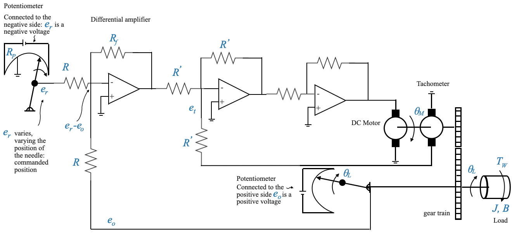Definizione delle variabili
La variabile \(\theta_L\) è il nostro attributo di interesse, quello che vogliamo controllare. A scopo illustrativo, supponiamo \(\theta_L\) rappresenta la posizione di un’antenna. D’altra parte, \(\theta_R\) è il segnale di comando, che in molte applicazioni del mondo reale può arrivare digitalmente o da vari dispositivi.
Ai fini di questo quaderno, rappresenteremo simbolicamente il segnale di comando, utilizzando un cursore su un potenziometro per regolare \(\theta_R\). Mentre il tergicristallo si muove, regola la tensione (chiamiamola tensione \(e_r\)), che è direttamente proporzionale a \(\theta_R\).
Potenziometro
La relazione tra \(\theta_R\) e \(e_r\) dipende dalla costante del potenziometro \(K_p\), che dipende dalla tensione fornita al potenziometro, e dal resistore:
\[e_r = K_P\theta_R\]
Nota che stiamo usando un altro potenziometro per rilevare l’uscita \(\theta_L\).
I potenziometri sono spesso utilizzati in questi sistemi. Tuttavia, possono introdurre non linearità a causa della loro risoluzione finita. Ad esempio, un potenziometro a filo avvolto cambia passo dopo passo, non consentendo regolazioni continue (ad esempio, potenziometro a filo avvolto). Nonostante ciò, per il nostro modello matematico, assumeremo per semplicità una relazione lineare.
Per ora, utilizziamo i potenziometri come rappresentazioni di dispositivi che consentono di generare segnali di riferimento e feedback, ma il dispositivo reale potrebbe essere diverso da un potenziometro, con caratteristiche lineari migliori.
Dalla tensione al controllo della posizione
Concentriamoci ora sul primo amplificatore operazionale.
Questo circuito fornisce una tensione di uscita proporzionale alla differenza \(e_r−e_0\), dove \(e_0\) è la tensione di feedback corrispondente a \(\theta_L\). Questa operazione fa sì che l’Op-Amp si comporti come un amplificatore differenziale con un guadagno specifico (\(\frac{-R_f}{R}\)). A seconda della disposizione, l’uscita di tensione può rappresentare la posizione o la velocità.
L’amplificatore operazionale agisce come un amplificatore differenziale, producendo una tensione di uscita basata sulla differenza tra la tensione di riferimento e quella di feedback.
Date le disposizioni specifiche con i potenziometri (\(e_r\) è una tensione negativa e \(e_0\) è una tensione positiva), abbiamo:
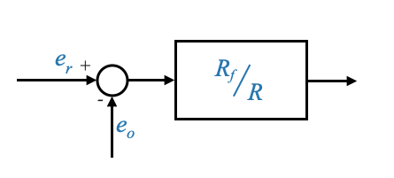- Si noti che per rendere la rappresentazione semplice, abbiamo ristrutturato il nostro diagramma a blocchi invertendo i segni di queste tensioni.
Possiamo poi sommare i potenziometri per avere la presenza esplicita dei due angoli:
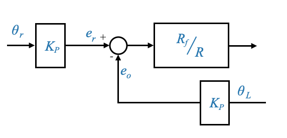Questo può anche essere scritto in modo equivalente come:
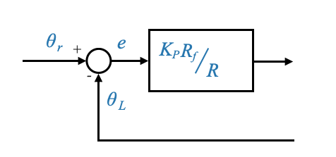- Abbiamo spostato \(K_P\) all’interno del ciclo
- Questo ora è un ciclo di feedback unitario
Integrazione del feedback della dinamo tachimetrica
Una parte cruciale del nostro sistema è l’aggiunta di un generatore tachimetrico, che introduce un circuito di feedback secondario (o minore) per la velocità. La tensione della dinamo tachimetrica (\(e_t\)) svolge un ruolo fondamentale nelle prestazioni e nel controllo del sistema.
Il secondo Op-Amp funziona anche come amplificatore differenziale con guadagno: \(\frac{-R^{'}_f}{R^{'}}\). L’ingresso di questo amplificatore operazionale è \(e^{'}-e_t\).
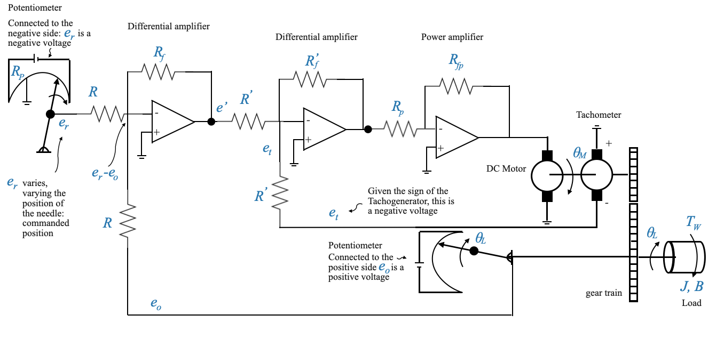L’amplificatore operazionale finale viene utilizzato come amplificatore di potenza con guadagno: \[-\frac{R_{fp}}{R_p}\]
Da notare che, dato che abbiamo due amplificatori operazionali in cascata, i loro segni negativi si annullano e alla fine della catena abbiamo il segnale desiderato.
Possiamo ora completare lo schema a blocchi:
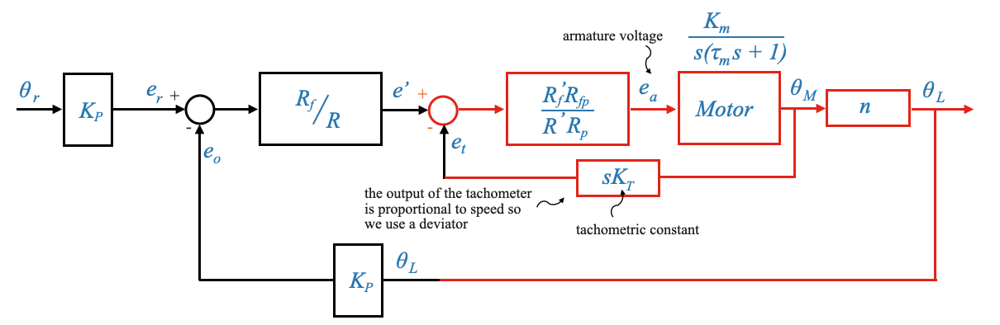Tieni presente che puoi dettagliare il diagramma a blocchi con una rappresentazione più dettagliata del motore che include il circuito EMF posteriore.
Ricordare che il rapporto di trasmissione è definito come:
\[n = \frac{\dot{\theta}_L}{\dot{\theta}_M} = \frac{\theta_L}{\theta_M}\]
Il sistema ha due cicli:
- Ciclo primario (feedback di posizione): fornisce un feedback basato sulla posizione \(\theta_L\).
- Loop secondario o minore (feedback di velocità): questo loop fornisce feedback in base alla velocità. Deriva il suo segnale da una dinamo tachimetrica, simboleggiata da \(e_t\). Questo circuito secondario ha uno scopo di smorzamento simile a quello della forza elettromotrice posteriore intrinseca nel motore, ma ha il vantaggio di essere regolabile.
- Loop interno al motore: la natura intrinseca del motore introduce un altro anello di feedback, la forza elettromotrice posteriore, che non è direttamente sotto il nostro controllo. Al contrario, l’uscita della dinamo tachimetrica può essere controllata, permettendoci di regolare lo smorzamento del sistema.
Rompere i loop
Rompere il loop di velocità
Se rompiamo il feedback di velocità secondario, cosa succede alle prestazioni del sistema?
La dinamo tachimetrica fornisce intrinsecamente informazioni sulla velocità del sistema (stiamo restituendo la derivativa di \(\theta_M\) attraverso il tachimetro).
La mancanza del circuito secondario porta ad una perdita di smorzamento
Il sistema continuerà a funzionare come un sistema di controllo della posizione ma attraverso il circuito secondario stiamo controllando lo smorzamento del sistema. La dinamo tachimetrica generalmente fornisce un effetto smorzante al sistema, contribuendo a stabilizzarlo. Questo effetto di smorzamento è utile per ridurre al minimo le oscillazioni attorno al setpoint o al valore di riferimento. Senza questo feedback, il sistema potrebbe subire oscillazioni prolungate o addirittura sostenute in seguito a eventuali disturbi o modifiche del setpoint. Le prestazioni potrebbero peggiorare.
Nota che è simile a quello che è successo quando stavamo analizzando l’effetto della forza elettromagnetica posteriore. Anche la forza elettromotrice posteriore era proporzionale alla velocità ed era in grado di migliorare il nostro smorzamento. L’unica differenza è che la forza elettromotrice posteriore (\(K_b\)) è fuori dal nostro controllo (una volta selezionato il motore non è possibile modificare \(K_b\)). La \(K_T\) invece è qualcosa che puoi controllare esplicitamente selezionando la dinamo tachimetrica.
Conseguenze nel mondo reale: se il nostro sistema controllasse la posizione di un’antenna, una perdita di smorzamento potrebbe portare l’antenna a superare la posizione desiderata e quindi a oscillare avanti e indietro prima di stabilizzarsi. Ciò potrebbe causare segnali di comunicazione interrotti o degradati.
Rompere il loop di posizione
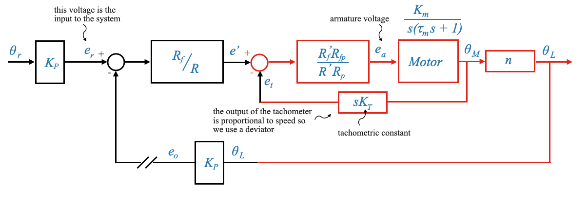Quando il circuito di retroazione primario (posizione) viene interrotto, ma il circuito secondario (velocità) rimane, il sistema si comporta come un sistema a velocità controllata.
Nota che l’ingresso effettivo che abbiamo è la tensione \(e_r\). In precedenza abbiamo interpretato questo segnale come una posizione.
La tensione \(e_r\) nel loop diretto, che in precedenza era interpretata come posizione, ora è indicativa della velocità, dato che il feedback proviene ora dalla dinamo tachimetrica che rappresenta la velocità.
Il sistema diventa un sistema a velocità controllata. Possiamo anche ora esplicitare che la dinamo tachimetrica fornisce una velocità: